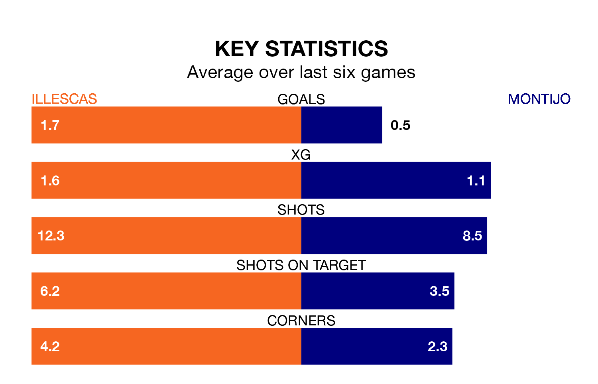

Mid-season relegation candidates Montijo face a challenge away against high-flying Illescas at Estadio Municipal de Illescas on Saturday.
Montijo are rooted to the bottom of the Segunda División RFEF Group 5 table, and have picked up two wins and four draws in their 17 games to date.
Illescas, meanwhile, are second in the standings with 29 points, having won eight and drawn five, and are level on points with table-toppers CD Numancia.
Illescas are in good form in Segunda División RFEF Group 5, with four wins and a draw from their last six games.
With no wins and a draw over that period, Montijo's form is much worse – they have taken one point from 18, compared to the home side's 13.
With 13 goals in 17 games so far this season, the visitors are the league's lowest scorers with 0.8 goals per game. And they are conceding more than average, letting in 25 goals at a rate of 1.5 per game.
Illescas, meanwhile, are above average scorers, with 1.3 goals per game, compared to a league average of 1.1. They have conceded 0.9 goals per game.
Illescas's last match was on Sunday, a 0-0 draw against Gimnástica Segoviana CF.
Montijo lost 2-1 against Atlético Paso last time out, also on Sunday.
Updated: 15:34, 08/01/24